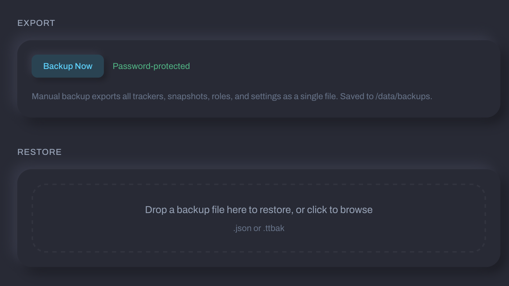
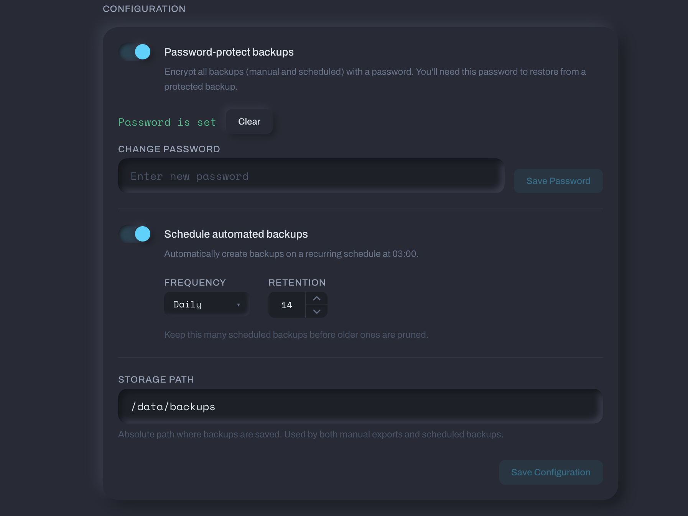

Backups¶
Tracker Tracker backs up your configuration and history. Download backups manually whenever you want, or set up automatic scheduled backups that save to disk on the server.
What Gets Backed Up¶
| Item | Backed up? | Notes |
|---|---|---|
| App settings (poll intervals, proxy, notifications, TOTP state) | ✓ | Encrypted |
| Trackers and configurations | ✓ | All metadata |
| Upload/download history (snapshots) | ✓ | Full time-series |
| Download client configurations | ✓ | Encrypted (credentials) |
| Tag groups & notification targets | ✓ | All destinations |
| Your login password | ✗ | Never exported; use current password to restore |
| Encryption salt | ✗ | Never backed up; stays on instance |
| Failed login counters | ✗ | Reset to zero on restore |
| Transient state (last poll time, errors, cached torrents) | ✗ | Not persisted |
| Notification delivery history | ✗ | Not included |
Sensitive values — API tokens, client credentials, proxy passwords, webhook URLs, TOTP secrets — remain encrypted in the backup file.
Backup File Format¶
Backups are plain JSON (encrypted backups use .ttbak). The header includes version, creation time, instance URL, and data counts to confirm you're restoring the right file.
Encrypted Backups (.ttbak)¶
Add an extra encryption layer to any backup. Set the password in Settings → Backups — it's separate from your login password. Each backup generates a random key, so two backups with the same password produce different ciphertext.
This is useful if you store backups in cloud storage, send them offsite, or anywhere you don't want the raw config readable.
Exporting a Backup Manually¶
Go to Settings → Backups and click Export Now. Manual exports download to your browser and don't save to the server.

Scheduled Backups¶
Scheduled backups run automatically at 03:00 server time.
| Frequency | When it runs |
|---|---|
| Daily | Every day at 03:00 |
| Weekly | Every Monday at 03:00 |
| Monthly | First day of each month at 03:00 |
They save to the storage path you set in Settings → Backups and show up in your backup history.
Retention¶
Set a retention count (1-365, default 14). Once exceeded, the oldest backups delete automatically.
Restoring a Backup¶
Before you start¶
- Your current login password (for confirmation)
- For
.ttbakencrypted backups, the backup password
What happens during restore¶
- Backup file is validated
- All existing data is deleted
- Backup data is written to the database
- If the backup is from a different instance, encrypted fields are automatically re-encrypted for your current password
- Failed login attempts reset to zero
- Your login password stays the same. You stay logged in.
Cross-instance restores¶
Restoring from a different Tracker Tracker instance with a different password? The app re-encrypts sensitive fields automatically. If a field can't be re-encrypted (i.e., the backup was encrypted with an unknown password), it's cleared. For TOTP, the restore screen tells you if 2FA is disabled — re-enable it after restoring.
TOTP after a cross-instance restore
If 2FA was active but can't be carried over, it'll be disabled. Re-enroll in Settings → Security after the restore.

Settings Reference¶
| Setting | Default | Description |
|---|---|---|
| Scheduled backups | Off | Enable automatic backups on a schedule |
| Frequency | Daily | How often to run: daily, weekly, or monthly |
| Retention count | 14 | How many backups to keep (1-365) |
| Encrypt backups | Off | Add an extra encryption layer to scheduled backups (.ttbak) |
| Storage path | — | Server directory where scheduled backups are saved |